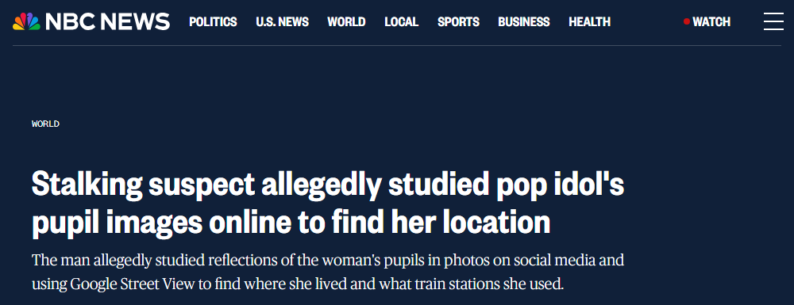
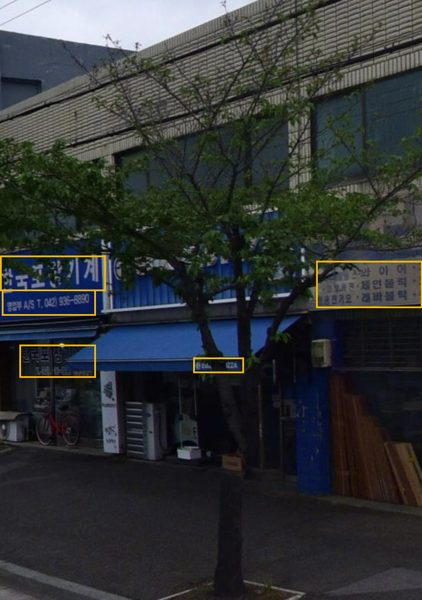
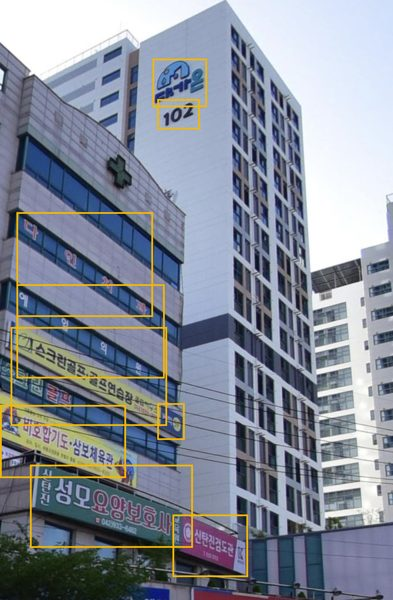
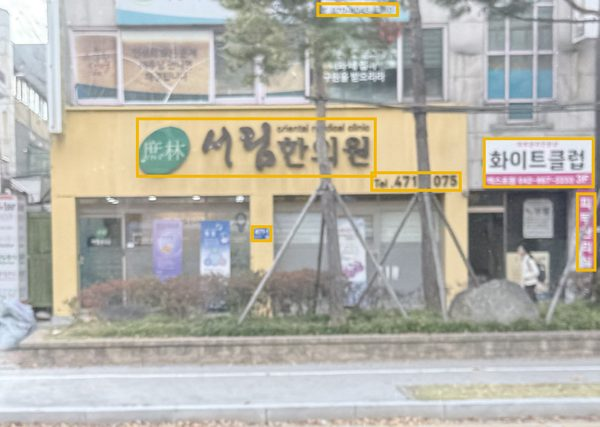
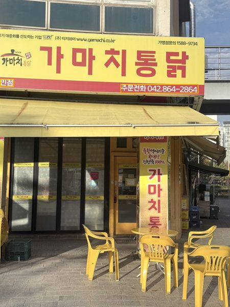
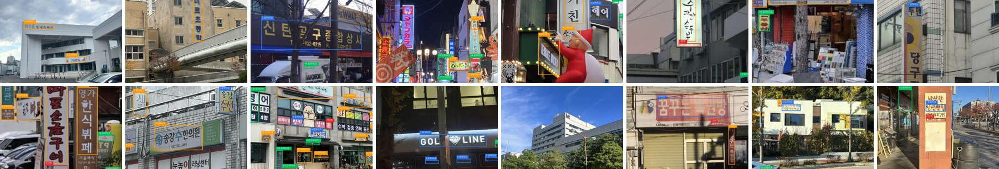
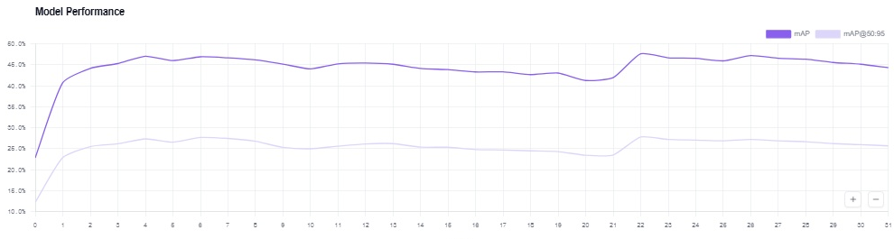
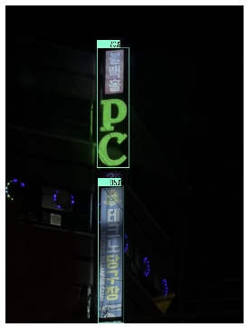

아이SHADOW 발표 설계도
최종 PPT를 만들기 전 단계의 정보 설계입니다. 슬라이드마다 한 가지 메시지, 그 근거, 화면 배치, 시각화를 정했습니다.
근거 자료: AGENTS.md(잰 값) · 2회차 멘토링 회의록(2026.11.02) · 사업개발 멘토링(2026.11.20) · docs/ideathon-qa.html(외부 통계) · 대회 안내(발표 7분·질의 3분) · 평가표.
확인되지 않은 내용은 추가 자료 필요, 검증 안 된 주장은 가설로 표시했습니다.
1. 전체 프레젠테이션 기획
관통 메시지
사진 속 간판이나 교복 하나로도 아이가 어디 다니는지 알 수 있다. 부모는 걱정하지만 무엇이 위험한지 확인할 방법이 없다. 아이SHADOW는 글자와 교복을 읽어 동네를 좁히는 단서만 가려내 다시 그리고, 얼굴·손은 구조로 지킨다.
핵심 목적
본선 심사에서 "실제로 작동하고, 안전이 구조로 지켜지며, 데이터로 키울 길이 보인다"는 판단을 받아 상위 7팀(20팀 중)에 든다.
주요 청중
본선 심사위원. 아이 사진 문제의 당사자(부모)는 아니며, 기술 세부보다 문제·작동·검증·사업성을 본다. 평가표(합계 100):
| 평가 항목 | 세부 평가 내용 | 배점 |
|---|---|---|
| 문제 이해도 | 해결이 필요한 지역·사회 문제와 대상의 페인포인트를 정확히 파악하였는가 · 문제에서 해결책까지 논리적으로 연결되는가 | 15 |
| 서비스 완성도 | AI를 활용한 서비스가 실제로 작동하는 수준으로 구현되었는가 · 핵심 기능이 완성도 있게 구현되고 UX/UI를 잘 갖추었는가 | 25 |
| 비즈니스 모델 | 서비스 도입 시 기대 효과가 구체적이고, 다른 지역이나 대상으로 확장할 수 있는가 · 서비스를 지속적으로 운영할 수 있는 구조를 갖추었는가 | 20 |
| 검증 | 사용자 인터뷰, MVP 테스트 등 실제 검증 활동을 진행하였는가 · 검증 결과를 바탕으로 서비스나 사업 방향을 개선하였는가 | 15 |
| 발표 및 전달력 | 발표 흐름과 논리 구성이 명확한가 · 시연(현장 또는 영상)을 통해 서비스를 완성도 있게 보여주었는가 | 15 |
| 팀워크 및 성장 가능성 | AI 도구를 활용해 아이디어를 결과물로 만들어 간 성장 과정이 드러나는가 · 팀원 간 역할 분담 및 역량이 잘 드러나는가 | 10 |
청중이 이해해야 할 것
- 아이 사진 보호는 이제 부모 개인이 아니라 법과 정책의 과제다(Why Now)
- 부모는 걱정하지만, 사진 속 무엇이 위치를 알려 주는지 확인할 방법이 없다
- AI가 글자 뜻을 읽어 동네를 좁히는 단서만 골라 지운다 — 얼굴·손은 바뀐 픽셀 0
- 무엇을 쟀고 무엇이 부족한지 알고, 503장 → 부모 과금 → 육아 인플루언서로 간다
발표 후 심사위원이 할 생각
"지금 필요한 문제를 하나로 뾰족하게 잡았고, 이미 작동한다. 판단은 아직 약하지만 팀이 그걸 알고, 데이터와 고객을 넓힐 순서가 구체적이다."
디자인 기준 4가지 — 슬라이드를 그리기 전에 먼저 정한다
| 기준 | 정한 것 |
|---|---|
| 폰트 | Pretendard 웹폰트 한 종(굵기만 바꿈). 운영 PC에 없을 수 있어 PPT 제출 때 글꼴 파일 첨부, 깨지면 PDF. |
| 색 4개 |
배경 #FFFFFF
메인(강조) #0C8840
서브 #1F2A44
텍스트 #1B2333
강조색은 메인 하나뿐. 한 장에서 강조할 곳 하나에만 쓴다. 메인 색은 임시 — 추가 자료 필요: 레퍼런스에서 추출 |
| 진행 표시 | 목차 장은 없음. 위쪽 진행 막대도 빼기로 함 (11.21) |
| 비율 | 16:9 고정. 아래 와이어프레임은 화면 폭이 바뀌어도 비율을 유지한 채 통째로 확대·축소된다(휴대폰에서도 무너지지 않음). |
| 레퍼런스 | 멘토 권고: 잘 만든 IR 5장을 골라 흐름·핵심 메시지·글/그림 비율·도식 중 무엇을 배울지 짚는다. 추가 자료 필요: 레퍼런스 IR 목록 |
도식 구조 5가지
| 구조 | 그리는 법 | 쓴 장 |
|---|---|---|
| 나열형 | 같은 도형을 같은 간격으로. 강조할 것만 다른 색. 허전하면 아이콘이나 도형 안 얇은 선 하나. | 02 · 10 |
| 대조형 | 강조할 쪽만 메인 색 · 굵은 선 · 더 큰 크기. 두 도형 사이에 아래로 갈수록 투명해지는 사다리꼴 그라데이션. | 01 · 03 · 04 · 07 |
| 과정형 | 화살표가 중심. 두꺼운 선 화살표 + 그라데이션 선. 단계는 같은 도형, 가로 간격 똑같이. | 05 |
| 확장형 | 같은 도형을 점점 크게, 색은 점점 진하게. 원이면 바깥으로 갈수록 투명한 방사형 그라데이션. | 08 · 09 |
| 설명형 | 대상을 가운데, 설명 도형 일부는 대상 뒤 · 일부는 앞에 두어 입체감. 밝은 배경엔 어두운 그림자. | 06 |
2. 목차 · 시간
01 · 20초표지 · 제품 소개
02 · 15초시장 · 셰어런팅
03 · 30초사례 · 해외와 국내
04 · 25초시장 판도 · 우리 자리
05 · 35초해결 방법 · 공정도
06 · 55초시연
07 · 25초만든 과정 · 타임라인
08 · 25초달라진 것 · 전과 후
09 · 15초공개 데이터로 위치 좁히기 · 시도
10 · 15초마스킹 모델 학습 ① 데이터 만들기
11 · 20초마스킹 모델 학습 ② 학습 · 결과
12 · 25초수익 모델
13 · 25초시장 진입 전략
14 · 25초마케팅 · 실제로 해 본 것
15 · 15초확장 계획
16 · 15초팀원 · 누가 무엇을 했나
17 · 10초비전 · 마무리
3. 슬라이드
02
시장 · 셰어런팅
SNS 사용하시나요?
15초
SNS 사용하시나요?
① 부모의 SNS부모 10명 그림 (8명 + 9번째 60% 칠함)
세이브더칠드런 조사(2021), 만 0~11세 자녀 부모 1,000명
86.1%
SNS를 하는 부모 10명 중 8~9명이 아이 사진을 올림세이브더칠드런 조사(2021), 만 0~11세 자녀 부모 1,000명
② 그래서 생긴 말셰어런팅
셰어(share) + 페어런팅(parenting). 부모가 아이 사진 · 영상을 SNS에 올리는 것
셰어(share) + 페어런팅(parenting). 부모가 아이 사진 · 영상을 SNS에 올리는 것
뉴시스 · 2022.10.9
노컷뉴스 · 2023.7.15
말하려는 것: 이름이 붙을 만큼 흔하다 = 시장이 크다 · 시장 규모 숫자 [추가 자료 필요]
03
사례 · 해외와 국내
해외 부모도 똑같습니다
30초
해외 부모도 똑같습니다
해외 · 셰어런팅 사진이 범죄로 이어진 사건
미국 법무부 · 2023.11 · 학교 댄스 · 첫 등교일 사진을 AI로 변형 → 징역 40년
«미국 샬럿의 아동 정신과 의사, 미성년자 성착취와 AI로 아동 성착취물을 만든 혐의로 징역 40년»
IBTimes · 2015.9.30 · 호주: 아동 성착취 사이트 사진의 절반이 페이스북에서
«호주: 소아성애 사이트들, 사진의 절반을 페이스북에서 가져와»
NBC News · 2019.10 · 일본: 셀카 눈동자에 비친 역으로 집을 찾아가 범행 (피해자는 성인)

«스토킹 용의자, 아이돌이 올린 사진 속 눈동자를 분석해 사는 곳을 찾아낸 혐의»
국내 · 범죄 사례는 확인 못 함
직접 인터뷰 · 육아·교육 인플루언서 (인스타 DM)
Q. 팔로워나 모르는 분이 아이가 어디 사는지, 어디 다니는지 알아챈 듯한 반응을 보인 적이 있었나요? (글자로)
"무슨 동네 사시네요" 댓글 이야기 · 인터뷰 답변 캡처 (답변만, 인스타 DM · 프로필과 계정 이름 뺌)
실제 육아 인플루언서 게시물에 달린 댓글
"뭐야 블랙벨트였어요? ○○에 있는 태권도 맞죠?" 댓글 캡처
우리가 막는 것: 배경 · 교복으로 아이를 찾아오는 길 (얼굴 합성은 못 막음) · 기사는 매체 화면 캡처, 아이가 나온 사진은 흐리게
08
달라진 것 · 전과 후
[제목 미정]
25초
[제목 미정] 기존 웹과 수정 후 웹
기존 웹
→기존 웹 캡처
assets/web/before.png
assets/web/before.png
수정 후
수정 후 캡처
assets/web/after.png
assets/web/after.png
사진 두 장 · 왼쪽 기존 웹, 오른쪽 수정 후 ·
assets/web/에 before.png · after.png를 넣으면 자리에 뜸10
마스킹 모델 학습 ① 데이터 만들기
[제목 미정]
15초
마스킹 모델 학습 ① 데이터 만들기
[제목 미정]
① 11가지 경우로 나눠 각자 약 100장씩 촬영

가려진 간판80장 잘린 간판61장
잘린 간판61장
옥상 간판58장
가로 간판57장 세로 간판48장
세로 간판48장 가방38장
가방38장
입간판35장 가릴 곳 없음34장
가릴 곳 없음34장 교복34장
교복34장 차량33장
차량33장 현수막25장
현수막25장합계 503장 · 어려운 사진(가려진 · 잘린 간판)과 가릴 곳 없는 사진까지 넣음
② 라벨링 · 가릴 곳에 상자 치기

503장에 2,367곳 · 이 상자가 모델이 배우는 정답
가린다가게 · 학원 이름
전화번호 · 교복 기관명
전화번호 · 교복 기관명
안 가린다프랜차이즈 · 일반 문구
메뉴 · 가격
메뉴 · 가격
11
마스킹 모델 학습 ② 학습 · 결과
[제목 미정]
20초
[제목 미정] 10장에서 만든 사진으로 모델을 학습했다
1이미 사물을 찾는 모델에서 시작
처음부터 만들지 않고 우리 사진으로 다시 학습

2사진 401장으로 학습
나머지 102장은 시험용으로 남겨 둠


▶
3처음 보는 사진으로 채점
간판 위치를 상자로 찾아냄

가려야 할 곳을 찾는 비율학습한 모델이 함께 찾으면
42%→약 70%
너무 작아 글자로는 못 읽던 간판도
위치로 찾아냅니다
위치로 찾아냅니다